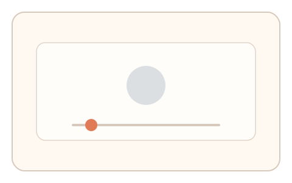
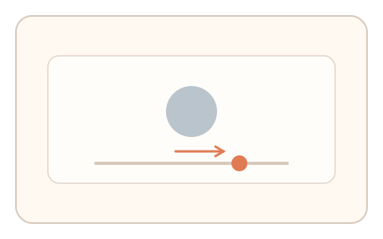
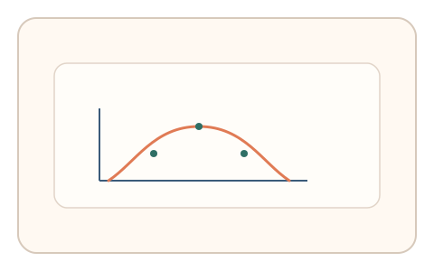

#28
视觉思考范式：空间/结构/直觉
已扩展
临界对比阈值
让用户调节对比度到刚可见，利用阈值区间与调节路径验证真实性。
概念原文
用户调节对比度滑杆，直到目标“刚刚可见”；记录阈值区间与调整曲线。
依赖人类视觉敏感度分布与调节路径，而非识别正确性。
研究背景
视觉系统对对比度的敏感度存在稳定分布，临界可见阈值在特定条件下呈可预测区间。通过测量阈值与调节曲线，可获得难以伪造的感知特征。
核心机制
- 呈现低对比目标与滑杆控制。
- 用户调节对比度直到目标刚可见。
- 记录阈值值域与调节步进曲线。
- 评估阈值与调节节奏的合理性。
用户流程
- 步骤 1：用户看到低对比目标与滑杆。
- 步骤 2：用户调节滑杆直到刚可见。
- 步骤 3：系统分析阈值与路径并判定。
判定信号
对比阈值区间
人类对比敏感度存在稳定可测范围。
调节曲线的收敛方式
真实调节会出现逐步逼近与微调行为。
判定逻辑
检查阈值是否落在合理区间，并分析调节曲线是否呈逐步收敛；阈值异常或一次到位判异常。
对抗面
- 脚本直接设定固定阈值
- 重放真实用户调节序列
防御与缓解
- 随机化背景亮度与目标形态
- 多次测量取一致性并结合调节节奏
- 叠加微时序与鼠标轨迹信号提高伪造成本
可达性与风险
提供高可见替代任务或可跳过选项，避免对低视力用户造成不公平负担。
- 环境光线变化影响对比阈值
- 屏幕色彩校准差异导致偏差
可视化状态

状态 1：低对比目标
目标接近背景，仅在临界可见。

状态 2：调节对比
用户拖动滑杆逐步逼近阈值。

状态 3：阈值分布
记录阈值与调节曲线形态。
参考资料
Contrast sensitivity
说明对比敏感度与阈值概念。
Psychophysics
说明感知阈值测量的基础方法。